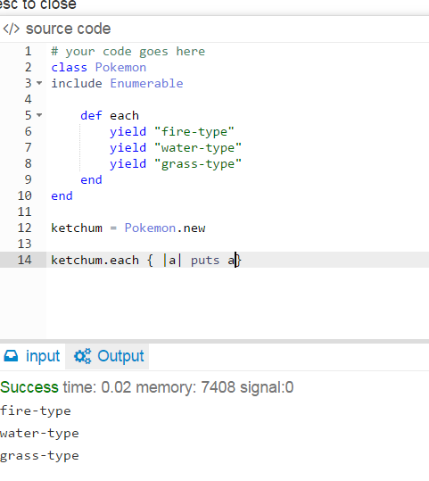
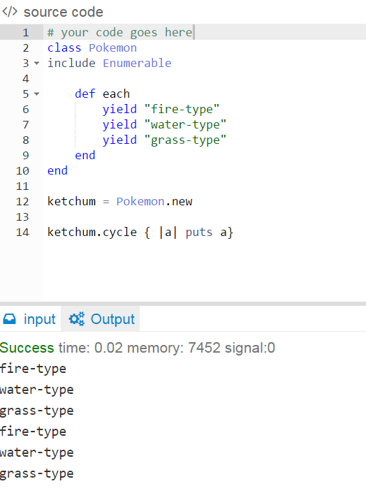

Enumerable Methods
#Cycle
July 15, 2015
Enumerables are known for their iterative properties. The Enumerable is an extremely powerful tool in Ruby. It allows for the traversal and searching of methods and as such can sort methods with great ease. Using the enumerable on an object requires that the method that the object is made with utilizes an #each method where it is uses iteration to go through (or yield) (2) items and use an operator to help order,or sort the members of a collection that the enumerator will go through.

One enumerable worth mentioning is #cycle Cycle is used to "cycle" or through a block for a given number of times or forever if no number is specified! If the collection that it is supposed to yield to is empty, then nothing happens, and if the loop finishes without interruption, then it returns nil.


Although #cycle specifies the number of times it will iterate through a block, it does not allow you to specify the number of elements to cycle through. Another thing to be conscious about is that if you want to cycle on forever, all of your important logic and commands, must go insde the block that will be cycled through infinitely because if not, that code may never get executed.
When #Cycle is passed with an object, these problems are bypassed because it can be used with other enumerators. That leads us into new territory, chaining. Chaining is when you call one enumerator after the other on a single object. An example would be something like: obeject.reverse_each.map but thats a lesson for another day!